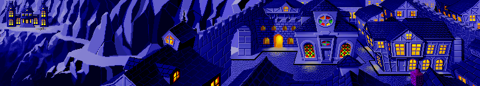
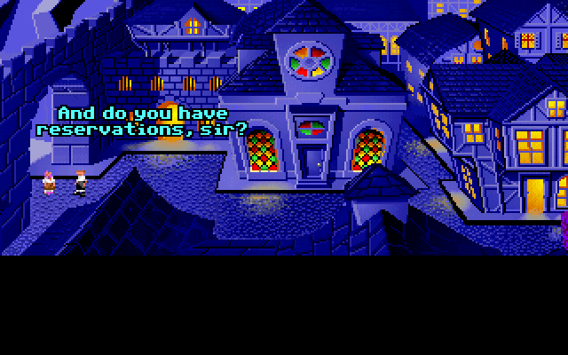
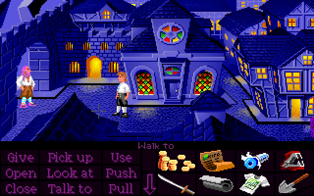
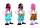
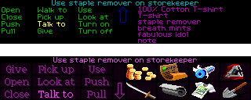
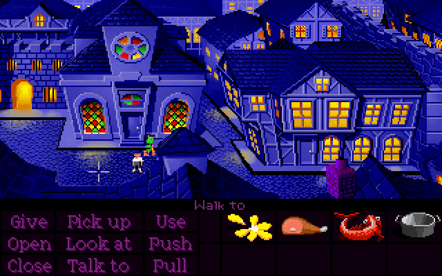
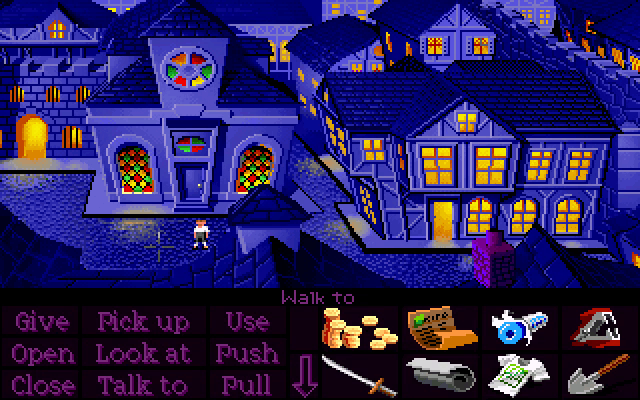

After completing the Three Trials, the way to the mansion will be blocked by the Reservations Guy. Unfortunately we never get a proper look at him, because we only ever see him scaled down to just a handful of pixels.

However, if we scale him back up to full size, we can find out what he actually looks like.

Surprise! It was Otis the whole time!
Rather than create a whole new costume just for this character who will only ever be seen at a tiny scale, the developers just borrowed Otis's costume and swapped out some of his colors through code to make him look a little different. This version of him appears to have pink hair and a pink beard (which looks like some kind of head scarf, especially at small scale) and pink bunny slippers.
The EGA floppy and VGA floppy versions are pulling the same trick, of course, but he came out looking a little differently in each. Here's a comparison of how he looks across all three versions:

Nothing was changed on the code side of things - these differences are due entirely to changes in the sprites and palettes. In the EGA version (which would have been done first), they gave him cyan trousers (and a spooky glowing eye) by swapping out the two colors used for his trousers, and this was probably the only deliberate choice here. The VGA version looks essentially the same, except for the brown smudge on his trousers, due to an extra shade being added which the palette-swapping doesn't account for.
The CD version is where things really go off the rails. The order of the colors in the costume palette got shuffled around during the upgrade, which means the palette swaps are now pointing to the black used for his hair and shoes, and the blue stripes on his socks. His sock stripes ended up as the lighter cyan (the one used for the trouser highlights in the first two Otises), but the darker cyan got lost somewhere and turned into this bright pink.
This is a (probably-very-unintended) side-effect of the verb interface colors being updated. The dark cyan we saw before happens to be the exact color used for the sentence line in the floppy version. The CD version adopted Monkey Island 2's purplish color scheme, and that cyan color got replaced with the bright pink used for the highlighted sentence line (as in, specifically the highlighted sentence line, as it looks after you click on something, as if this wasn't confusing enough already).

An easy-to-miss detail is that the wandering pirates actually disappear after Elaine's been kidnapped!


The same thing also applies to Low Street.